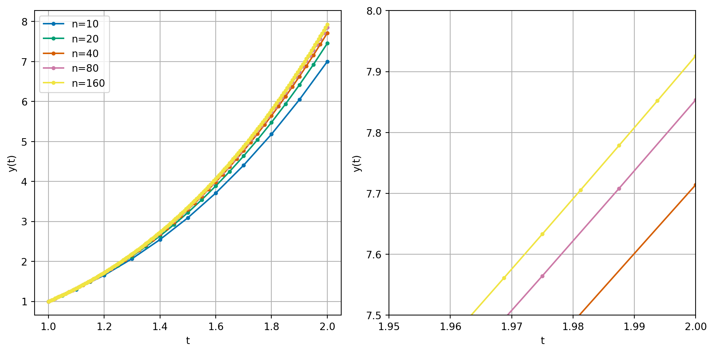
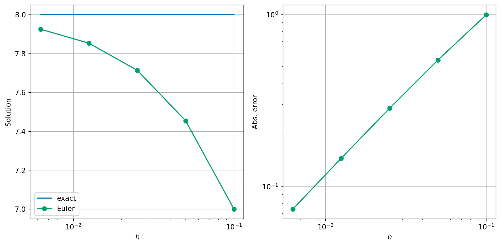
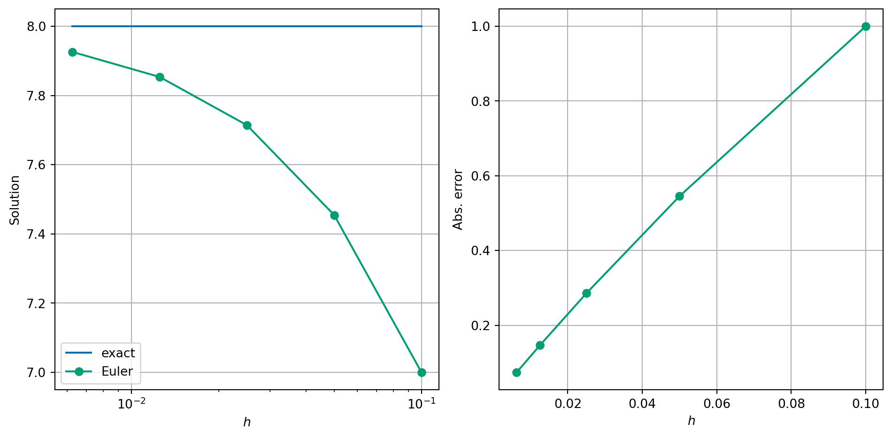
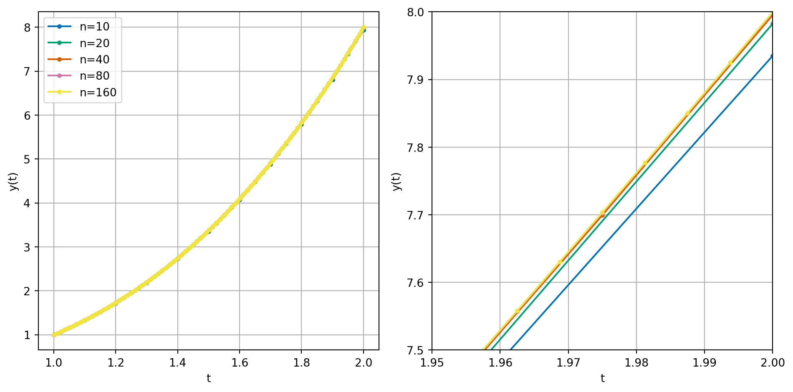
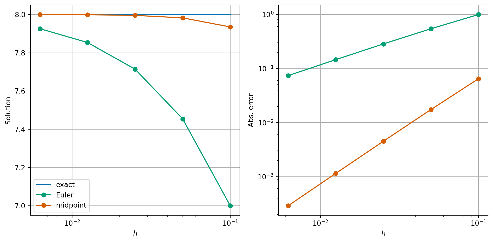
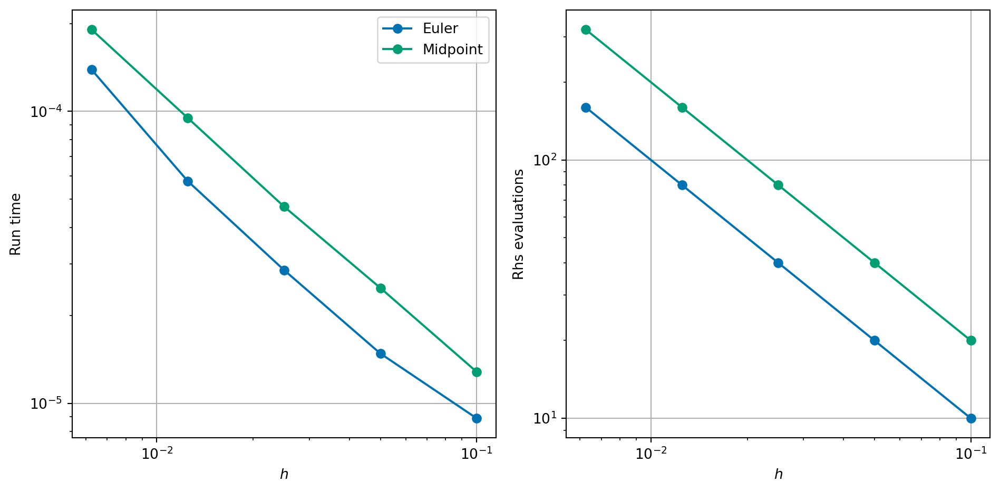
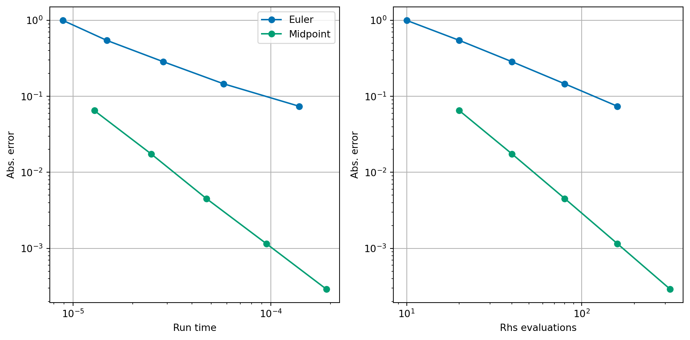

Analysis of errors
Use exact solutions to calculate errors in numerical methods for differential equations,
Calculate rates of convergence for differential equation solvers.
Consider \(y(t) = t^3\), we can compute that \[ y'(t) = 3 t^2 = \frac{3 y(t)}{t}. \] Hence, we know the solution to the following equation: \[\begin{equation} \label{eq:diff-eq} y'(t) = \frac{3 y(t)}{t} \quad \text{subject to} \quad y(1) = 1. \end{equation}\] If we solve this differential equation for \(t\) between \(1\) and \(2\), say, then we know that the exact answer when \(t=2\) is \(y(2) = 8\).
Recall that for a differential equation given by: \[\begin{multline*} y'(t) = f(t, y(t)) \\\text{subject to the initial condition}\quad y(t_0) = y_0. \end{multline*}\]
Euler’s method is given by:
Exercise 1 Compute two time steps of Euler’s method to approximate the solution of \[\begin{equation} y'(t) = \frac{3 y(t)}{t} \quad \text{subject to} \quad y(1) = 1. \end{equation}\] at time \(T=2\). What is the error between your computed solution and the exact solution (\(y(2) = 8\))?
Submit your solution using vevox.app ID 130-942-368.
Euler step: \(y^{(i+1)} = y^{(i)} + h f(t^{(i)}, y^{(i)})\), \(t^{(i+1)} = t^{(i)} + h\).
We can also implement Euler’s method in code:

We can also co using the absolute error \[ \text{absolute error} = |y^{(n)} - y(2)|, \] where \(y^{(n)}\) is the solution at the final time step.
| n | h | Solution | Abs. error | ratio |
|---|---|---|---|---|
| 10 | \(1.000\times 10^{-1}\) | 7.000000 | \(1.000\times 10^{0}\) | --- |
| 20 | \(5.000\times 10^{-2}\) | 7.454545 | \(5.455\times 10^{-1}\) | 0.545455 |
| 40 | \(2.500\times 10^{-2}\) | 7.714286 | \(2.857\times 10^{-1}\) | 0.523810 |
| 80 | \(1.250\times 10^{-2}\) | 7.853659 | \(1.463\times 10^{-1}\) | 0.512195 |
| 160 | \(6.250\times 10^{-3}\) | 7.925926 | \(7.407\times 10^{-2}\) | 0.506173 |

Remark 1. Using log scales is really important when considering variables like \(h\) or error. Contrast the above nice plot, with nice evenly spread data points, with these linear scaled plots:

Exercise 3 Why don’t we use a log scale for solution too?
When considering algorithm complexity, you have already seen big \(O\) notation. For example:
For large values of \(n\) the highest powers of \(n\) are the most significant. For smaller values of \(h\), it is the lowest powers of \(h\) that are the most significant. When \(h = 0.001\), \(h\) is much bigger than \(h^2\), for example.
We can make use of the big \(O\) notation in either case. Formally, we say that \(f(h) = O(h^p)\) as \(h \to 0\) if there exists a constant \(C > 0\) such that \(|f(h)| < C |h|^p\) for all small enough \(h\).
Example 1 Let \(f(x) = 2x^2 + 4x^3 + x^5 + 2x^6\),
In this notation, we can say that the error in Euler’s method is \(O(h)\).
Solve differential equations numerically using the midpoint method
Take two steps of the midpoint rule to approximate the solution of \[\begin{multline*} y'(t) = -y(t)^2 \\\text{subject to the initial condition} \quad y(0) = 2, \end{multline*}\] for \(0 \le t \le 2\).
\(k = y^{(i)} + \frac{h}{2} f(t^{(i)}, y^{(i)})\), \(m = t^{(i)} + \frac{h}{2}\), \(y^{(i+1)} = y^{(i)} + h f(m, k)\), \(t^{(i+1)} = t^{(i)} + h\).
Exercise 4 Compute one time step of the midpoint method to approximate the solution of \[\begin{equation} y'(t) = \frac{3 y(t)}{t} \quad \text{subject to} \quad y(1) = 1. \end{equation}\] at time \(T=2\). What is the error between your computed solution and the exact solution (\(y(2) = 8\))?
Submit your solution using vevox.app ID 130-942-368.
\(k = y^{(i)} + \frac{h}{2} f(t^{(i)}, y^{(i)})\), \(m = t^{(i)} + \frac{h}{2}\), \(y^{(i+1)} = y^{(i)} + h f(m, k)\), \(t^{(i+1)} = t^{(i)} + h\).
We can also implement the method in code and explore how the error changes as we change the number of steps.

| n | h | Solution | Abs. error | ratio |
|---|---|---|---|---|
| 10 | \(1.000\times 10^{-1}\) | 7.935060 | \(6.494\times 10^{-2}\) | --- |
| 20 | \(5.000\times 10^{-2}\) | 7.982538 | \(1.746\times 10^{-2}\) | 0.268892 |
| 40 | \(2.500\times 10^{-2}\) | 7.995475 | \(4.525\times 10^{-3}\) | 0.259127 |
| 80 | \(1.250\times 10^{-2}\) | 7.998849 | \(1.151\times 10^{-3}\) | 0.254473 |
| 160 | \(6.250\times 10^{-3}\) | 7.999710 | \(2.904\times 10^{-4}\) | 0.252212 |
This is a significant improvement on Euler’s method. We say that the midpoint method is second order, whereas Euler’s method is just first order.
We can see the significant reduction in error by plotting the errors for both methods:

Explain how to balance accuracy and efficiency when solving differential equations numerically.
| n | h | Run time | Rhs evals | Run time ratio |
|---|---|---|---|---|
| 10 | \(1.000\times 10^{-1}\) | \(8.889\times 10^{-6}\) | 10 | --- |
| 20 | \(5.000\times 10^{-2}\) | \(1.482\times 10^{-5}\) | 20 | 1.666817 |
| 40 | \(2.500\times 10^{-2}\) | \(2.861\times 10^{-5}\) | 40 | 1.930989 |
| 80 | \(1.250\times 10^{-2}\) | \(5.769\times 10^{-5}\) | 80 | 2.016351 |
| 160 | \(6.250\times 10^{-3}\) | \(1.391\times 10^{-4}\) | 160 | 2.410931 |
| n | h | Run time | Rhs evals | Run time ratio |
|---|---|---|---|---|
| 10 | \(1.000\times 10^{-1}\) | \(1.283\times 10^{-5}\) | 20 | --- |
| 20 | \(5.000\times 10^{-2}\) | \(2.485\times 10^{-5}\) | 40 | 1.937351 |
| 40 | \(2.500\times 10^{-2}\) | \(4.720\times 10^{-5}\) | 80 | 1.899494 |
| 80 | \(1.250\times 10^{-2}\) | \(9.494\times 10^{-5}\) | 160 | 2.011454 |
| 160 | \(6.250\times 10^{-3}\) | \(1.907\times 10^{-4}\) | 320 | 2.009262 |

However, we can make this plot another way by plotting the cost against the error.
